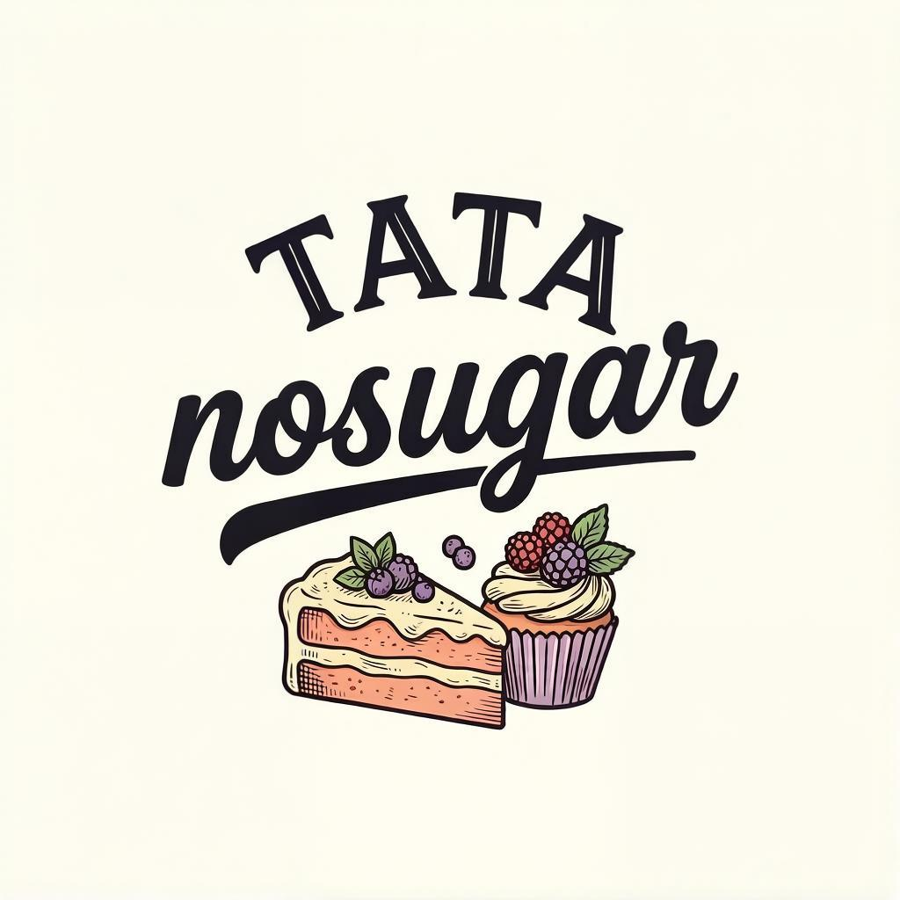

Десерты без сахара, ручная работа
Корпусные десерты и другие ПП десерты из натуральных ингредиентов. Готовим в Екатеринбурге небольшими партиями — заказывайте напрямую, без посредников.
Доставка и оплата
Самовывоз. г. Екатеринбург, пр-кт Космонавтов, д. 91В
Курьером. Заказ отправляется Яндекс-курьером, оплата доставки за счёт клиента. Можно заказать самостоятельно, чтобы не сообщать свой адрес.
Оплата. Полная предоплата переводом до начала приготовления заказа. Возможны индивидуальные условия при заказе крупных партий.
Обо мне
Привет! Меня зовут Татьяна. Я готовлю полезные кондитерские изделия с 2018 года, а с 2021 года полностью посвятила себя десертам без сахара.
Работаю исключительно по проверенным, выверенным рецептам. Это гарантирует вам стабильный результат: каждый десерт будет идеальным по форме, текстуре и вкусу.
В моих сладостях нет сахара, маргарина и белой муки. При этом они ни в чем не уступают классическим кондитерским изделиям. Их сложно отличить от традиционной версии. За счет ювелирного подбора качественных ингредиентов и баланса нутриентов десерты сохраняют привычную сладость и нежный вкус, но содержат меньше калорий и лучше насыщают.
💼 Корпоративные заказы:
С радостью помогу сделать ваш рабочий праздник или подарок для коллег особенным! Я работаю официально как самозанятая и приготовлю вкусные наборы для ваших мероприятий. Все отчетные документы и чеки предоставлю.
Контакты
Телеграм: @taira_lis